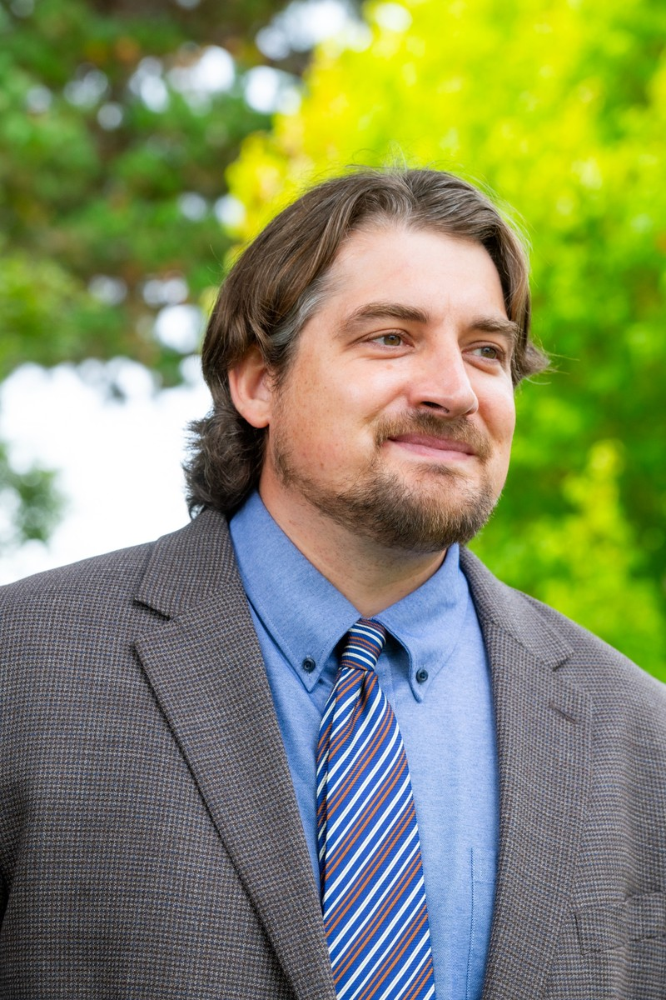

I am an anthropologist specializing in archaeology. I have participated on or led archaeological field and laboratory investigations in North Macedonia, Turkey, France, Peru, Italy, Mexico, Germany, and the United States. Experiences include survey of Late Roman to Byzantine settlement in the Central Anatolia of Turkey, excavations at a cave site spanning the transition from Neanderthals to early modern humans in France, excavations and survey in the capital city of the Andean Casma culture in Peru, geophysics at a Roman town in the Veneto of Italy, geophysics and survey at a Postclassic Mesoamerican city in Veracruz, Mexico, lab training in archaeological micromorphology at the University of Tübingen in Germany, excavations at Classical, Hellenistic, Roman, and Medieval sites in North Macedonia, and excavations at the historic site of Monticello in Virginia.
My dissertation research focused on human and ecosystem responses to the warming and drying trends of the Middle Holocene Climatic Optimum 8000 to 5000 years ago and the role of Archaic hunter-gatherers in creating anthropogenic environments with fire between 5000 and 3000 years ago in Eastern North America. For this research, I was awarded the 2021 Dissertation Prize by the Midwest Archaeological Conference and University of Notre Dame Press. I am co-editor of Falls of the Ohio River: Archaeology of Native American Settlement (2021) published with the University of Florida Press.
Archaeological Field School
Field Archaeology
Environmental Archaeology
Professional Publication and Presentation
Cultural Diversity in the Modern World – Global Dynamics
Origins of New World Civilizations
Carlson, Justin N. and Anne Tobbe Bader
2025
Socio-environmental dynamics and persistent places in the Green River and Falls of the Ohio River regions during the middle Holocene
, Southeastern Archaeology, 44(3-4):132-141.
Carlson, Justin N., Greg J. Maggard, Gary E. Stinchcomb and Claiborne Daniel Sea
2021
Middle Archaic Lifeways and the Holocene Climatic Optimum in the Falls Region
. In
Falls of the Ohio River: Archaeology of Native American Settlement
, edited by David Pollack, Anne Tobbe Bader and Justin N. Carlson. University of Florida Press, Gainesville.
Pollack, David, Anne Tobbe Bader, and Justin N. Carlson
2021
Falls of the Ohio River: Archaeology of Native American Settlement
. University of Florida Press, Gainesville.
Visonà, Paolo, George M. Crothers, Justin N. Carlson, Donald Handshoe, Silvana Lora, P. Allegra Rasia and Luanao Toniolo
2014
A Forgotten Roman Settlement in the Veneto. University of Kentucky Geoarchaeological Investigations at Tezze di Arzignano (Vicenza, Italy) in 2012
. The Journal of Fasti Online, Associazone Internazionale di Archeologia Classica.
Ph.D. Anthropology
University of Kentucky
M.A. Anthropology
University of Kentucky
B.S. Anthropology (minor in Archaeology)
College of Charleston
B.A. History
College of Charleston
Justin N. Carlson, Ph.D.
Lecturer and Research Associate – Archaeology
justinnelscarlson@gmail.com